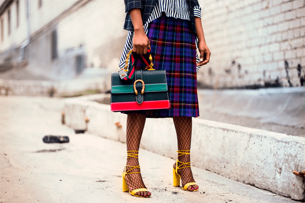

A partir do entendimento de moda, temos que o seu conceito vem a partir da maneira ou característica que é predominante em um determinado grupo ou região, ela é uma forma que expressamos nossos sentimentos, estilos e gostos por meio de uma roupa.A conexão serve para apresentar uma percepção efêmera e pessoal de cada um de nós para com o mundo. É uma linguagem que tem como objetivo criar um canal entre indivíduo e sociedade, fazendo sua integração em todos os espaços. A moda é um ciclo de influências para vários meios de comunicação social, e para as suas relações com a arte, política e as variáveis representatividades sociais adentrando aos tópicos, temos:
A escolha de uma roupa traz consigo inúmeros significados psicológicos, sociais e culturais, de forma que a moda, considerada por muitos como algo fútil, é, na verdade, uma peça chave para a construção e compreensão da personalidade. sua influência vai além do vestuário, estando estreitamente relacionada às noções de identidade.
Dentro da economia, o setor de roupas e acessórios evolui a cada instante. A todo vapor, indústrias e empresas criam tendências para os seus compradores, e fazem uso de seu poder sócio-econômico para representar ciclos de consumo instantâneo em todos os meios.
Política: moda e política estão entrelaçadas de maneira tão indissociável que a relação consciente entre as duas pouco ocorre de imediato. a partir do momento que você abre seu armário, as roupas que ver e vesti representam sua identidade e personalidade individual. cada indivíduo toma as peças para si, transforma-as no seu bem entender, e deixa de ser apenas isso para se tornar no que o indivíduo queira. a moda se interliga na política e nas representatividades sociais em contexto de expressar a ideia de mensagem que você pode afirmar (por meio dela, é claro).